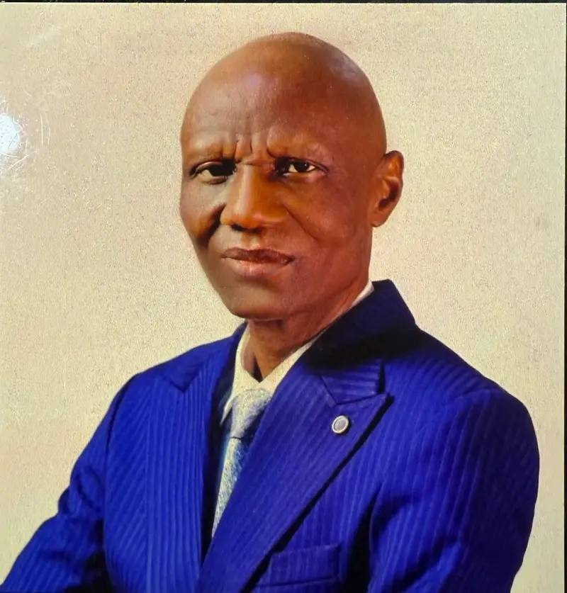
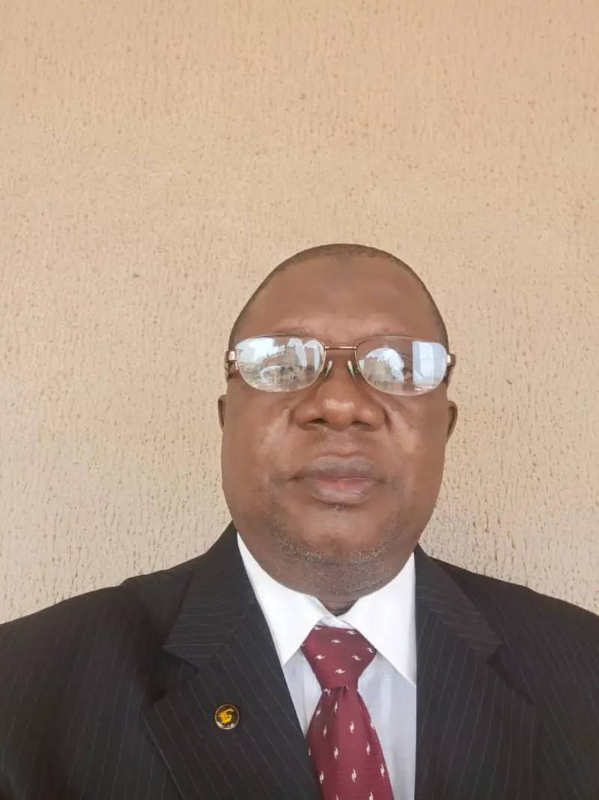
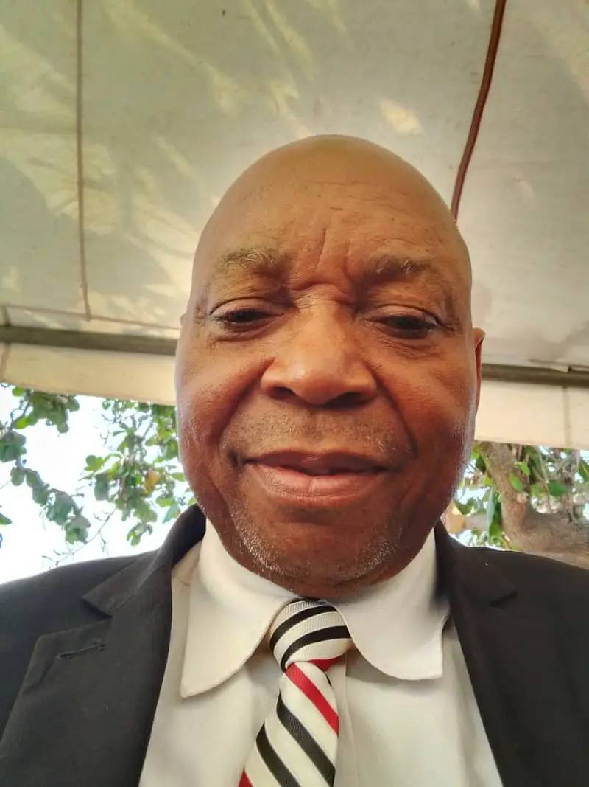
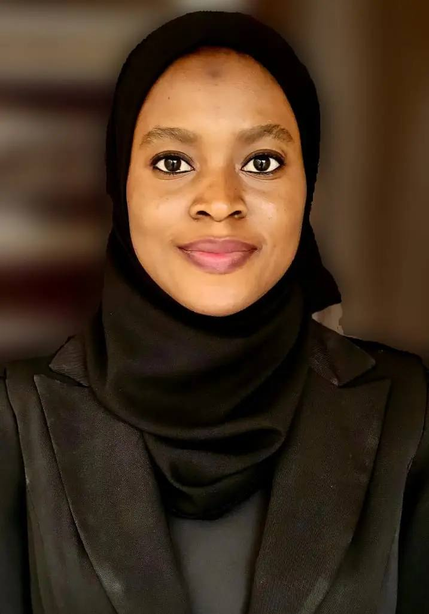
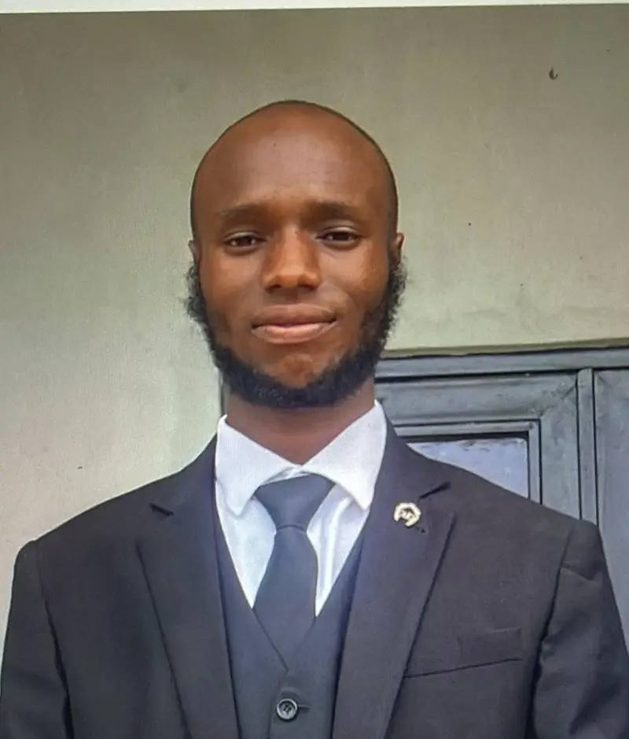
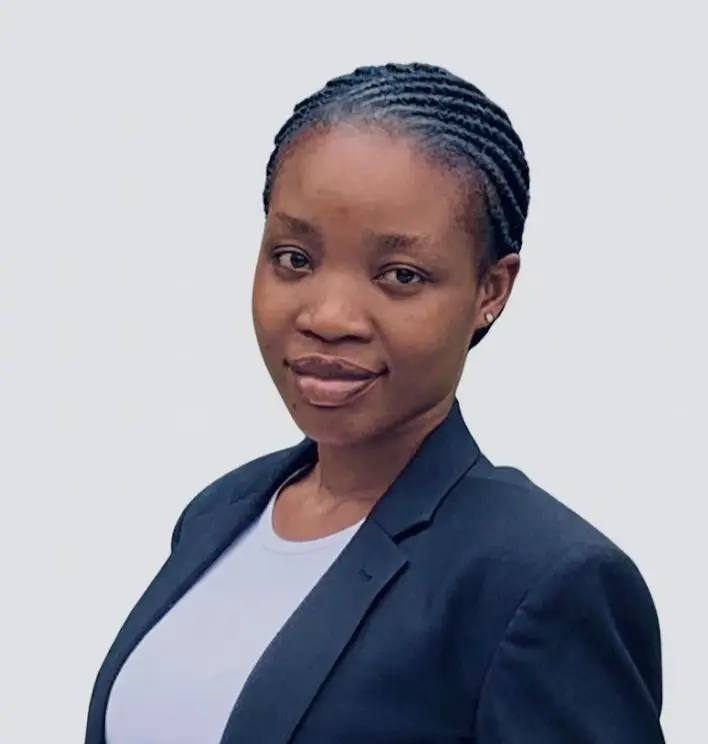
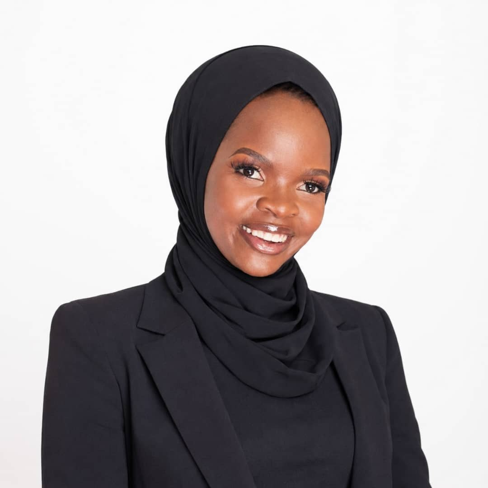
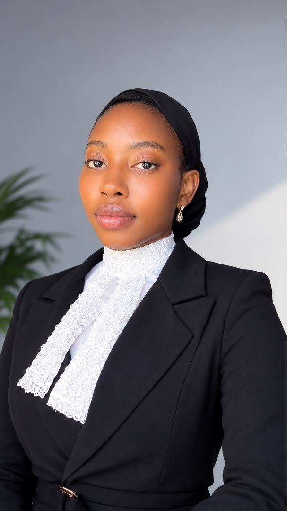
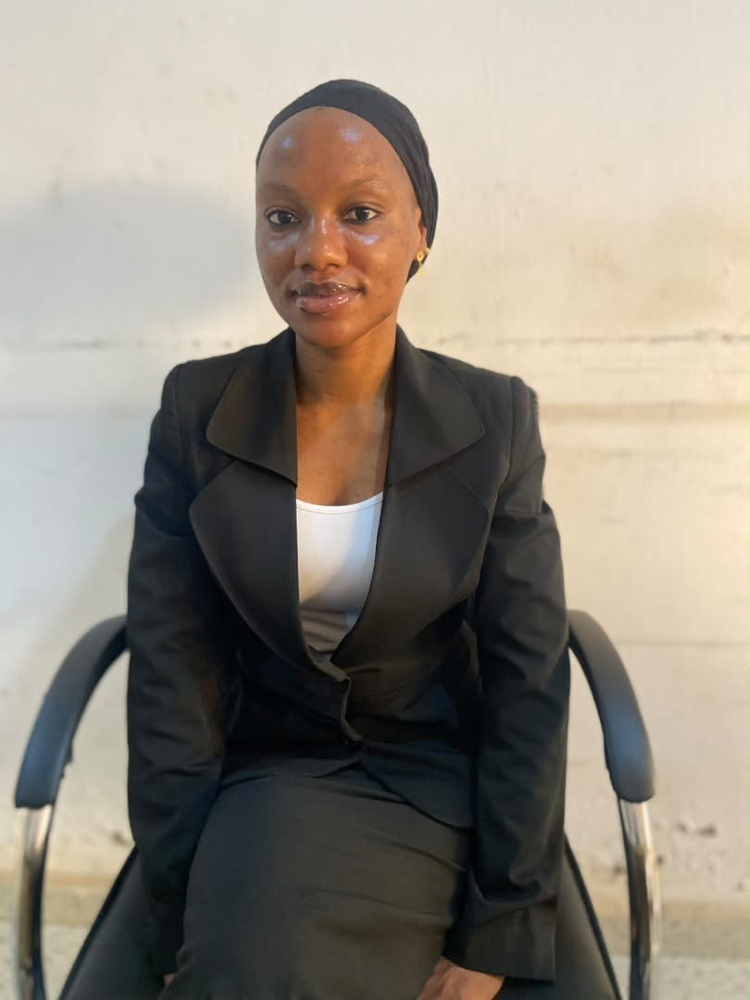
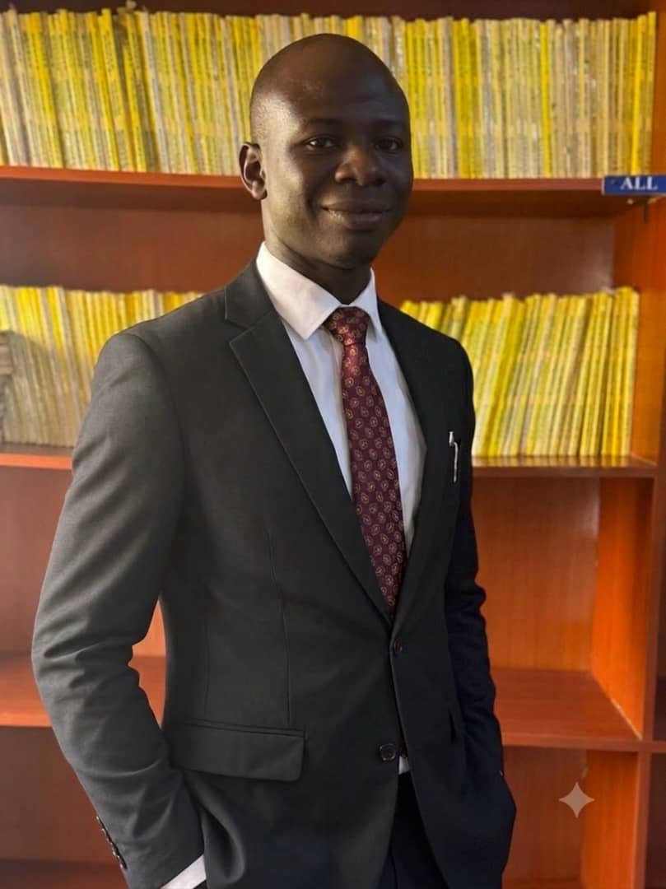

B.R. Gold, SAN
Principal Partner
B.R. Gold, SAN, is the Principal Partner and founder of Bola Rasaq Gold & Co (Adoration Chambers). He was called to the Nigerian...

Principal Partner
B.R. Gold, SAN, is the Principal Partner and founder of Bola Rasaq Gold & Co (Adoration Chambers). He was called to the Nigerian...

Associate Counsel
Mustapha F. Sa'ad, Esq., attended Ahmadu Bello University, Zaria, earning his LL.B (Hons) in 1989 before his call to the Nigerian...

Senior Counsel
R.O. Bakare graduated from Usmanu Danfodiyo University, Sokoto in 1999 and was called to the Nigerian Bar in 2001...
Senior Counsel
AbdulFatai Mohammed Bello, LL.B (Bayero University, 2002) and LL.M (Obafemi Awolowo University, 2008), was called t...

Head of Chambers
Ms. R.O. Mohammed attended Bayero University Kano and the Nigerian Law School, Abuja, before joining Bola Rasaq Gold & Co. in 2019. She currently serves as...
Deputy Head of Chambers
Ms. K.T. Shittu attended Bayero University Kano and the Nigeria Law School, Lagos, completing her National Youth Service in Dutse, Jigawa State in 2018. She joined Bola...
Associate, Property & Litigation
A.S. Muhydeen attended the University of Ilorin and the Nigeria Law School, Enugu Campus in 2019 before joining Bola Rasaq Gold & Co. in July 2024. His practice spans property law, civil and criminal litigation,...
.jpg)
Associate Counsel
Mrs. Abdulganiyu Maryam Yusuf earned her Bachelor’s degree in Common and Islamic Law from Bayero University, Kano,...

Associate Counsel
Mr. Abdulmujeeb Abdulrasheed Agbaje earned his Bachelor of Law (Jurisprudence and its Fundamentals) from the Islamic...

Associate Counsel
Miss O.M. Usman earned her LL.B from the University of Ilorin in 2022, attended the Nigeria Law School, Port Harcourt, and was called to the Bar in 2025 before joining Bola...

Associate Counsel
H.W. Dikko obtained a degree in Common and Islamic Law from Al-Hikmah University and attended the Nigerian Law School, Kano...

Associate Counsel
A.R. Abdulrahman obtained a degree in Common and Islamic Law from the University of Ilorin and attended the Nigerian Law School, Lagos...


Associate Counsel
A.O. Muhammadthanni studied Common and Islamic Law at the University of Ilorin and was subsequently called to the Nigerian Bar in 2025...
Associate Counsel
A.M. Gold graduated from Al-Hikmah University, Ilorin, in 2022. She attended the Nigeria Law School, Kano campus, in 2023 and was called to the bar in 2024...